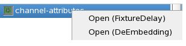

Channel Attributes Editor
This chapter describes the DeEmbedding page of the Channel Attributes editor.
Depending on your concern you can edit channel attributes using the following editors:
- Fixture Delay Tool
- Channel Attributes Editor
To open the respective editor, on the Test Program Explorer, right-click channel attributes and choose the editor from the shortcut menu.

Entry |
Description |
|---|---|
Open (FixtureDelay) |
Opens the Fixture Delay Tool |
Open (DeEmbedding) |
Opens the Channel Attributes Editor |
Save Configured |
Save the values for configured channels. Note A pin configuration must be loaded.
|
For general shortcut menu entries, see Working with Test Program Explorer.
Note Using the keyboard shortcut F3 (opening the selected item
in the assigned editor) opens the Fixture Delay Tool.
Functional changes
- Introduced in SmarTest 7.1.0